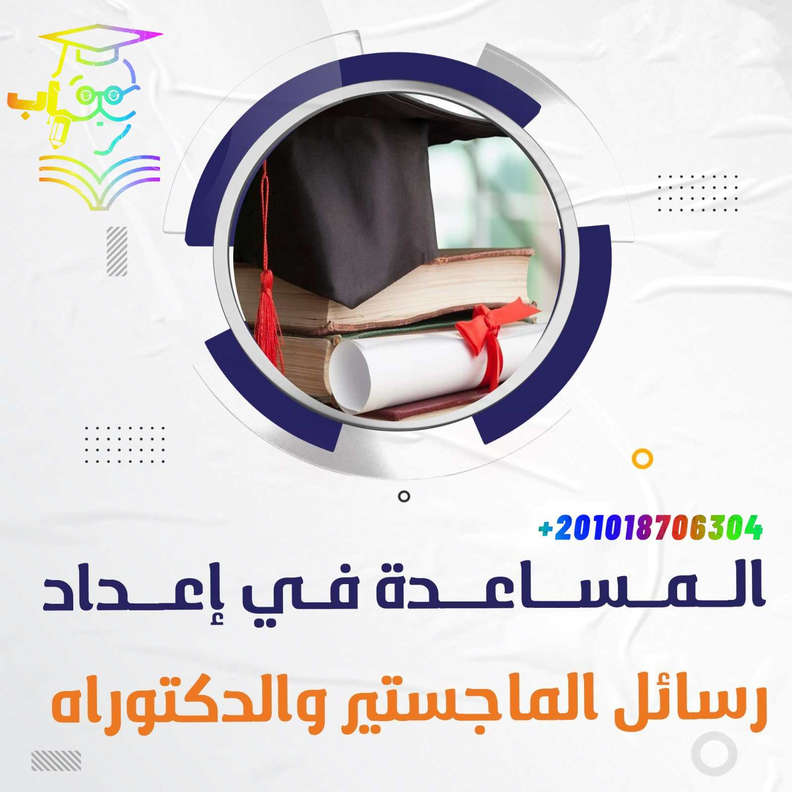

تحرص شركة مستقبل الشباب للاستشارات الأكاديمية على تقديم أقصي فائدة للباحثين في الوطن العربي؛ لذلك قامت بتجهيز دورة احترافية لتطبيق أسس الإحصاء في البحث العلمي بهدف تمكين المشاركين في الدورة من تطبيق أهم المبادئ والأساسيات الإحصائية المُتعارف عليها والتطبيق العملي في الأبحاث العلمية.
استفسار طلب الخدمةالخدمات الأكاديمية المساندة
المساعدة في إعداد رسائل الماجستير والدكتوراه

هل تحتاج إلى مساعدة في إعداد رسالتك للحصول على درجة الماجستير أو الدكتوراه؟ نحن هنا لنساعدك! نقدم لك خدمة المساعدة إعداد رسائل الماجستير والدكتوراه بأعلى جودة وأنسب الأسعار! ولأن نجاحك يعتمد على جودة الرسالة التي تقدمها، وهنا يأتي دورنا، فنحن نقدم خدمة إعداد رسائل الماجستير والدكتوراه بجودة عالية وفي وقت قياسي.
تعتبر خدمتنا هي الخيار الأمثل للباحثين الذين يبحثون عن مساعدة في إعداد رسالتهم من الآلف إلى الياء، كما أننا نعمل مع نُخبة من الدكاترة في كتابة الأوراق البحثية والرسائل الأكاديمية، لكي نوفر لك خدمة شخصية ومخصصة لكل باحث وفقًا لمتطلباته واحتياجاته.
يمكننا مساعدتك في جميع المراحل من إعداد الرسالة، بدءًا من مرحلة البحث وصولاً إلى مرحلة التحليل وكتابة النتائج يُمكنك طلب الخدمة، كما أننا نتعامل مع مختلف المجالات والتخصصات الأكاديمية، ولدينا خبرة واسعة في إعداد الرسائل الأكاديمية بأسلوب متميز ومنطقي وسلس.
لماذا تختار مستقبل الشباب في كتابة وإعداد رسائل الماجستير والدكتوراه؟
يُمكننا أن نكون الخيار الأفضل بلا منازع في مساعدة طلاب الدراسات العليا وذلك لأنك معنًا تحصل على العديد من المميزات:
✔يُمكننا ان نكون بجانبك خطوة بخطوة منذ البداية لتقديم خدمة موثوقة وفعالة تضمن لك الحصول على الدرجة بامتياز.
✔نضع نخبة من الدكاترة المتخصصين في المجالات المختلفة بين يديك هدفهم الوحيد هو تلبية احتياجاتك.
✔نضمن لك الحصول على رسالة ماجستير أو دكتوراه متميزة وفقًا لأعلى المعايير الأكاديمية، والتي تضمن لك الحصول على درجة عالية.
✔نمتلك خدمة عملاء متميزة تتواصل معك على مدار اليوم 24 ساعة طوال أيام الأسبوع حتى نكون معك دائمًا.
الضمانات التي تحصل عليها في خدمة المساعدة في إعداد رسائل الماجستير والدكتوراه؟
نحن في شركة مستقبل الشباب نضمن لك تقديم خدمة عالية الجودة وذات مستوي عالٍ من الاحترافية من أجل أن نضمن رضا العملاء:
♦كتابة رسالة علمية مُتقنة وذات جودة عالية خالية من الانتحال والسرقة الأدبية.
♦نلتزم بتسليم العمل دائمًا في الموعد المحدد والمتفق عليه مع العميل.
♦نحن نقدم خدماتنا بأسعار تنافسية ومناسبة للجميع.
♦نحن نوفر دعمًا فنيًا متواصلًا لعملائنا، وذلك لتأمين تجربة مريحة وسهلة.
♦إمكانية عمل رسائل دكتوراه في مختلف التخصصات الأكاديمية سواء باللغة العربية أو الإنجليزية.
خدمات المساعدة في إعداد رسائل الماجستير والدكتوراه
ولنبدأ معًا عزيزي الباحث في استعراض خدمتنا الأكاديمية بدأ من اختيار عنوان البحث وصولاً الى نشر رسالتك العلمية وتحويلها إلى كتاب مطبوع ملموس بين يديك!.
إعداد خطة البحث
تعتبر خطة البحث هي خطوة حاسمة في رحلة البحث العلمي وهي أولى خطوات خدمة المساعدة في إعداد رسائل الماجستير والدكتوراه، حيث تساعد في تحديد المسار الذي سيسلكه الباحث في إجراء الدراسة العلمية، وتحديد أهداف البحث والمنهجية اللازمة لتحقيقه، ويتطلب إعداد خطة البحث يتطلب الكثير من الوقت والجهد والخبرة. ولكن مع خدمتنا، يمكنك الاسترخاء وترك العمل لنا، نحن نضمن لك تقديم خطة بحث متميزة ومتكاملة وفقًا لمتطلبات جامعتك.
 لا تتردد في الاتصال بنا الآن لمعرفة المزيد عن معايير خدماتنا في إعداد خطط البحث اضغط على اللينك فورًا، وسنكون سعداء بتوفير المساعدة اللازمة لك لتحقيق أهدافك الأكاديمية .
لا تتردد في الاتصال بنا الآن لمعرفة المزيد عن معايير خدماتنا في إعداد خطط البحث اضغط على اللينك فورًا، وسنكون سعداء بتوفير المساعدة اللازمة لك لتحقيق أهدافك الأكاديمية .
المساعدة في الإطار النظري
يعتبر الإطار النظري هو الجزء الأساسي والحاسم في أي بحث علمي، حيث يساعد في تحديد المتغيرات الرئيسية والعلاقات المتبادلة بينها، ويوفر الأسس النظرية اللازمة لإجراء الدراسة العلمية بكفاءة. ولذلك، فإن خدمتنا في إعداد الإطار النظري ستساعدك في تحديد المفاهيم الرئيسية والنظريات المتعلقة بموضوع بحثك بطريقة دقيقة وفعالة.
تميز فريقنا بالخبرة والمهارة في إعداد الإطار النظري لمختلف التخصصات الأكاديمية، بما في ذلك العلوم الإنسانية والاجتماعية والطبية، والهندسية، والتقنية، وغيرها، نحن نعمل بشكل وثيق معك لفهم متطلبات بحثك.
نحن نفتخر بخدماتنا في إعداد الإطار النظري، ونعمل بجد لتزويد عملائنا بالخدمات المتميزة والجودة العالية إذا كنت ترغب في الحصول على خدماتنا، فالرجاء عدم التردد في الاتصال بنا الآن والضغط للتحصل على المزيد من التفاصيل حول معايير المساعدة في الإطار النظري.
إعداد فصل الدراسات السابقة
تُساعد الدراسات السابقة الباحثين على فهم الأدبيات السابقة والدراسات المنشورة المتعلقة بموضوع معين، ويعتبر الحصول على دراسة سابقة جيدة هو أساس نجاح أي مشروع أو بحث أكاديمي لذلك فإن خدمة الدراسات السابقة من أهم خدمات المساعدة في اعداد رسائل الماجستير والدكتوراه، لكى تساعدك في توجيه بحثك أو مشروعك إلى الاتجاه الصحيح، وتحديد النقاط القوية والضعف في الأدبيات المتعلقة بموضوع البحث.
وبالتالي، سيتم تحسين جودة وزيادة فرص نجاحه، حيث يتمتع فريق العمل في خدمة الدراسات السابقة بالخبرة والمعرفة اللازمة لإجراء الدراسات السابقة على أسس علمية ومنهجية، حيث يتم تقييم الأدبيات والدراسات المنشورة المتعلقة بموضوع البحث أو المشروع وتحليلها بشكل دقيق ومنطقي.
نحن نرحب بجميع الاستفسارات والطلبات، ونتطلع إلى العمل معكم لتحقيق أهدافكم الأكاديمية أو العملية، لا تترددوا في التواصل معنا الآن لمعرفة المزيد حول معايير خدمة إعداد فصل الدراسات السابقة.
تصميم أدوات الدراسة
إذا كنت تبحث عن تصميم أدوات الدراسة المتميزة والفعالة، فنحن هنا لتلبية احتياجاتك، فريقنا المتخصص في تصميم الأدوات الدراسية يتمتع بالخبرة والمهارة اللازمة لتصميم أدوات الدراسة التي تلبي تحدياتك الأكاديمية أو العملية، نتميز بتصميم أدوات دراسة تعتمد على أحدث التقنيات والأساليب المنهجية، حيث يتم تصميمها بشكل دقيق ومنطقي لتلبية احتياجات الباحثين في مجالاتهم المختلفة.
لا تتردد في الاتصال بفريق العمل في خدمتنا للحصول على المساعدة والدعم اللازمين، نحن نتطلع إلى تقديم خدمة متميزة وعالية الجودة لتلبية احتياجاتكم، يُمكنك معرفة المزيد عن معايير خدمة تصميم أدوات الدراسة بالضغط هنا.
منهجية الدراسة
تعتبر منهجية الدراسة خطوة مهمة ومُعقدة، وتتطلب الحصول على المساعدة في إعداد رسائل الماجستير والدكتوراه المزيد من المهارة والخبرة اللازمة في البحث العلمي، ونعمل في شركة مستقبل الشباب على تصميم المنهجيات الدراسية بشكل دقيق ومنطقي عن طريق تحديد الأساليب والأدوات والإجراءات المناسبة التي تُساعدك في التحقق من الفرضيات البحثية لرسالتك ونساعدك أيضًا في عمل رسائل الدكتوراه.
نحن نؤمن بأهمية التواصل المستمر مع عملائنا، فلا تتردد في الاتصال بنا لتحقيق النجاح المشترك واحصل على معايير منهجية الدراسة بصورة شاملة بالضغط على اللينك..
التحليل الإحصائي ومناقشة النتائج
في شركة مستقبل الشباب نقدم خدمات التحليل الإحصائي ومناقشة النتائج بطريقة احترافية ومتميزة بهدف مُساعدة طلاب الدراسات العليا، حيث يتم استخدام الأساليب والتقنيات الحديثة والمنهجيات الصحيحة لتحليل البيانات وتفسيرها بشكل دقيق ومنطقي، ويتم تقديم تقارير مفصلة وشاملة حول النتائج التي تم الوصول إليها.
تعتبر عملية التحليل الإحصائي ومناقشة النتائج أحد الخطوات الأساسية في البحث العلمي وفي التطبيقات العملية، حيث يساعد التحليل الإحصائي على فهم البيانات وتفسيرها، وتحديد العلاقات والاتجاهات والتنبؤات المستقبلية، ويمكن استخدام التحليل الإحصائي في مجالات مختلفة، مثل الطب والصحة والتسويق والاقتصاد والعلوم الاجتماعية.
إذا كنت بحاجة إلى أي مساعدة أو توجيه، فنحن هنا لنساعدك، ونتطلع إلى التواصل معكم احصل على تفاصيل أكثر حول خدمة التحليل الإحصائي ومناقشة النتائج بالضغط على اللينك مباشرة.
التدقيق الإملائي واللغوي عربي-انجليزي
والآن انهيت رسالتك بشكل كامل وترغب في الاخراج النهائي لها، في خدمات المساعدة في اعداد رسائل الماجستير والدكتوراه، نقدم خدمة التدقيق اللغوي الشاملة والدقيقة لجميع أنواع النصوص، سواء كانت رسائل البريد الإلكتروني، أو التقارير الرسمية أو المواد الإعلانية أو المقالات الصحفية والأكاديمية، ويتم التحقق من النصوص بدقة واهتمام كبير لضمان خلوها من الأخطاء اللغوية.
بما في ذلك الأخطاء الإملائية والنحوية والترقيم والصياغة العامة، ويتم تنفيذ خدمة التدقيق اللغوي بواسطة فريق من المحررين واللغويين المتخصصين، الذين يتمتعون بالخبرة والكفاءة في مجال التدقيق اللغوي وضمان جودة النصوص. ونحن نلتزم بتقديم خدمات عالية الجودة والمتميزة التي تتيح للعملاء التواصل بطريقة صحيحة ودقيقة، وتحسين مستوى الكفاءة والاحترافية في المجالات المختلفة.
إذا كنت ترغب في الحصول على معلومات إضافية أو الاستفسار عن خدماتنا، فنحن سعداء بتلقي استفساراتكم وتقديم المساعدة اللازمة ويُمكنك معرفة المزيد من المعلومات حول معايير التدقيق الإملائي واللغوي.
تنسيق الرسائل والبحوث
نحرص في شركة مستقبل الشباب على خدمة تنسيق الرسائل والبحوث بما يتوافق مع المعايير الأكاديمية المعتمدة، مثل تنسيق الصفحات والهوامش والخطوط والعناوين والمراجع والاقتباسات، وذلك باستخدام البرامج والأدوات اللازمة لتنسيق النصوص بشكل جيد لأن تنسيق هذه الأعمال بشكل صحيح ودقيق يمكن أن يكون مهمة صعبة ومستهلكة للوقت ويتطلب الحصول على المساعدة في اعداد رسائل الماجستير والدكتوراه.
تفانينا في تقديم خدمات تنسيق الرسائل تجعلنا الخيار الأفضل للباحثين الذين يرغبون في تقديم أعمالهم بشكل متميز واحترافي. اتصل بنا اليوم من هنا واحصل على المزيد من التفاصيل حول معايير تنسيق الرسائل والبحوث.
فحص انتحال السرقة الأدبية
تعد السرقة الأدبية من المخالفات الأكاديمية الخطيرة والتي يتعرض لها العديد من الطلاب والباحثين في مختلف المجالات، ومع ذلك، فإن فحص انتحال السرقة الأدبية يعد حلاً مثالياً لتحديد ما إذا كانت الأعمال الأكاديمية مسروقة أو لا قبل التقدم واجراء الفحص الرسمي للجامعة يُمكنك التأكد والاطمئنان معًا.
اذا كنت ترغب في الحصول على خدمات فحص انتحال السرقة الأدبية، يمكنك التواصل أفضل شركة متخصصة في هذا المجال، والتي تقدم خدمات عالية الجودة والمتميزة شاهد المعايير بنفسك بالضغط هنا.
إعداد الأبحاث العلمية
هل ترغب في مواصلة رحلتك العلمية؟ مستقبل الشباب تقدم لك الدعم الكامل على مدار رحلتك لتصل إلى أعلى الدرجات العلمية بتقديم خدمة إعداد الأبحاث العلمية ضمن خدمات المساعدة في اعداد رسائل الماجستير والدكتوراه لأنها تتطلب مجهودًا كبيرًا ووقتًا طويلاً، نحن نمتلك فريقًا من المتخصصين في مجالات مختلفة، والذين يمكنهم إجراء الأبحاث اللازمة وتحليلها بشكل دقيق ومتقن.
لا تتردد في الاتصال بنا، نحن نضمن لك الحصول على أفضل جودة لأبحاث الترقية، تمكنك من تحقيق النجاح والتميز في مجال عملك والوصول إلى أعلى المراتب الوظيفية والأكاديمي واحصل الآن على معايير إعداد الأبحاث العلمية.
تحويل الرسائل العلمية إلى كتاب
تسُاهم شركة مستقبل الشباب في تخليد اعمال الباحثين ومساعدتهم على تحقيق الانتشار لأعمالك العلمية طوّرت خدمة تحويل الرسائل العلمية إلى كتب من خلال فريق من الخبراء المتخصصين في مجال النشر الأكاديمي. إذا كنت تبحث عن طريقة لتحويل رسالتك العلمية إلى كتاب يتم تداوله ونشره، فإن خدمتنا هي الحل المثالي.
نحن نضمن لك الحصول على خدمة شاملة ومتفوقة، وتحقيق أعلى مستويات التميز والنجاح في مجال النشر الأكاديمي، لأن معايير الخدمة لدينا مُميزة وفريدة اضغط هنا للتعرف المزيد.
الترجمة البحثية
نحن نقدم خدمات الترجمة البحثية للأبحاث والأوراق العلمية والرسائل الجامعية والدراسات العليا والمقالات العلمية، وذلك للعديد من المجالات الأكاديمية والعلمية. ونحن نضمن لك الحصول على ترجمة متميزة وذات جودة عالية، وذلك بفضل فريقنا المتخصص في الترجمة البحثية.
نحن نعتمد في عملنا على أحدث التقنيات والمعايير الدولية في مجال الترجمة، وذلك لتوفير خدمة سريعة وفعالة وذات جودة عالية تعرف على المعايير الكاملة الترجمة البحثية والعلمية المتخصصة.
توفير المراجع العربية والأجنبية
في شركة مستقبل الشباب نعمل على تجميع المراجع والمصادر المرجعية بشكل منظم ومرتب، وذلك لتسهيل عملية الرجوع إليها والاستفادة منها في البحث العلمي. كما نتأكد من صحة ودقة المعلومات المستخدمة في المراجع، وذلك بالتحقق من مصداقية المصادر والمراجع.
نعمل على تجميع المراجع والمصادر المرجعية بشكل منظم ومرتب، وذلك لتسهيل عملية الرجوع إليها والاستفادة منها في البحث العلمي اعرف المزيد حول معايير المراجع في البحث .
وبعد أن قمنا بإستعراض خدمات المساعدة في إعداد رسائل الماجستير والدكتوراه هل تود ان نكون شركاء في نجاحك؟! تواصل معنا ولا تتردد نعدك بتوفير خدمات مميزة وراقية تلبي احتياجاتك وتلبي توقعاتك بالكامل في انتظار تواصلكم بكل ود وشغف عبر الواتساب الآن فنحن جاهزون دائمَا لخدمتكم في جميع أنحاء الوطن العربي.
- كتابة رسالة علمية مُتقنة وذات جودة عالية خالية من الانتحال والسرقة الأدبية.
- نلتزم بتسليم العمل دائمًا في الموعد المحدد والمتفق عليه مع العميل.
- نقدم خدماتنا بأسعار تنافسية ومناسبة للجميع.
- نوفر دعمًا فنيًا متواصلًا لعملائنا، وذلك لتأمين تجربة مريحة وسهلة.
- عمل رسائل دكتوراه في مختلف التخصصات الأكاديمية سواء باللغة العربية أو الإنجليزية